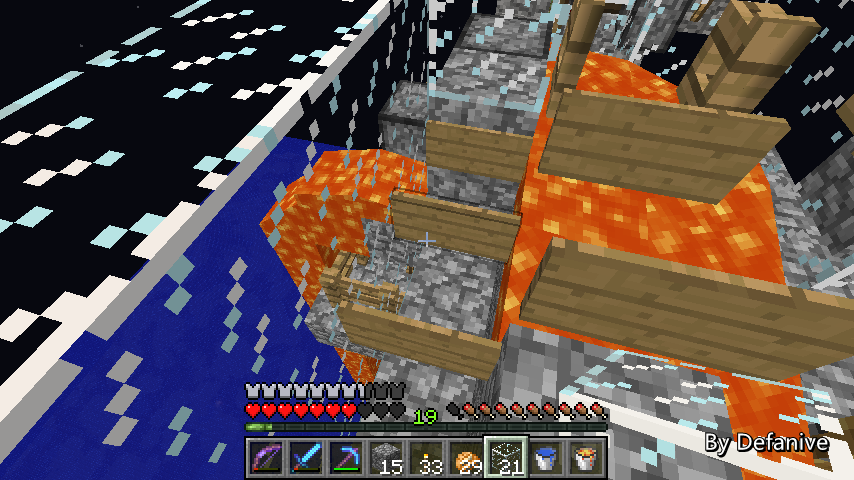

首页
上一页
247
248
249
250
251
252
252
253
254
255
256
257
下一页
末页
defanive2
无尽黑夜
14
设计是当怪物掉落到这块踏板上时
会受到摔落伤害
然后激活活塞，把怪物推向前方的水流
PS 话说这种装置的设计实在不知道应该怎么做好
以前有水流下放围栏的办法，但是需要提高很多摔落高度
估计有效的办法应该就只有这一个了吧
——来自 MCLive
18423楼
2013-07-06 00:07
defanive2
无尽黑夜
14
电路可以非常简单，直接把踏板的信号连接到活塞即可
但是这样并不完美
当刷怪塔速度快时，尤其是像我的设计
踏板信号会延迟很久才关闭，活塞也会保持伸出
这样下一个摔落的怪物就会落在活塞上
而减少了摔落伤害
——来自 MCLive
18424楼
2013-07-06 00:10
defanive2
无尽黑夜
14
解决方法也很简单，如图做一个脉冲缩短器即可
过了1tick之后，活塞就会推动方块，切断信号
PS 这个是无延迟的上边缘检测器
之前写了一篇无延迟红石电路的帖子
不过很多人断章取义的认为无延迟不可能实现
于是存档也放了一个下载
不过不相信的人也不会有那个耐心下载存档看看的
——来自 MCLive
18425楼
2013-07-06 00:14
defanive2
无尽黑夜
14
不过有些时候怪物会卡在踏板的角落上
导致活塞没有成功的把怪物推出去
这样的话怪物就会一直卡住电路
解决方法就是把输入信号改成一个脉冲
当有生物踩在踏板上时，活塞不断的推出
直到生物被推出为止
——来自 MCLive
18426楼
2013-07-06 00:16
defanive2
无尽黑夜
14
现在这部分的改变已经完成了
下一步就是在这里做各种功能的分流点
也是最关键的一步
——来自 MCLive
18427楼
2013-07-06 00:28
defanive2
无尽黑夜
14
这里将会被改造成一个很简单的分流口
这是其中一种情况，怪物会被直接推到下面
——来自 MCLive
18428楼
2013-07-06 00:34
defanive2
无尽黑夜
14
这是另外一种情况
活塞推出，并且发射器发射水桶（在此没有演示出来）
此时怪物就会顺水往前流
——来自 MCLive
18429楼
2013-07-06 00:35
defanive2
无尽黑夜
14
当怪物走这边时，我们会做一个怪物分离器
我们希望除了苦力怕之外的其他怪物被过滤掉
只有苦力怕被过滤出来
——来自 MCLive
18430楼
2013-07-06 00:43
defanive2
无尽黑夜
14
仍然在建造中，可能工作原理仍然不是很清晰
1.4之前要过滤只剩苦力怕是非常简单的
铁傀儡只会攻击僵尸和骷髅
因此苦力怕就会被过滤出来
只要保证骷髅和僵尸血量可以被一击必杀即可
——来自 MCLive
18431楼
2013-07-06 00:47
defanive2
无尽黑夜
14
我擦倒岩浆倒杯具了。。
说到岩浆，161岩浆会像水一样很快的自动消失了
清理起来方便了很多
——来自 MCLive

18432楼
2013-07-06 00:52
defanive2
无尽黑夜
14
而1.4更新后，只要是铁傀儡可以一击必杀的怪物
那么铁傀儡都会攻击
因此曾经的方法就不再适用了
——来自 MCLive
18433楼
2013-07-06 00:55
defanive2
无尽黑夜
14
但是要分离苦力怕的方法仍然是有的
雪人只会攻击非苦力怕的怪物，也就是骷髅和僵尸
因此我们可以利用这一点，把骷髅和僵尸给处理掉
——来自 MCLive
18434楼
2013-07-06 00:59
defanive2
无尽黑夜
14
了解了这点其实就很简单了
中间是怪物的流水线，怪物从这里流过
由于水流是往右下推的，因此怪物会被往右下推动
但是由于右边是鹅卵石围栏，因此怪物无法通过
最右侧是雪人的站位
雪人在见到非苦力怕的怪物后，就会用雪球攻击
雪球的推动效果就会把怪物推入岩浆烧死
这样就做到了过滤苦力怕的效果
——来自 MCLive
18436楼
2013-07-06 01:07
defanive2
无尽黑夜
14
回家取了雪人之后，现在就是造雪人的时候了
门除了用于阻挡水流之外，也用于分隔雪人
——来自 MCLive
18438楼
2013-07-06 01:13
defanive2
无尽黑夜
14
封棺，接下来整个机器应该可以运作了
——来自 MCLive
18439楼
2013-07-06 01:14
defanive2
无尽黑夜
14
最后检查一次密封性，应该可以投入使用了
PS 这两个栅栏门是什么作用呢
有时候怪物还没到岩浆区域，雪人就开始攻击了
此时并不能杀死怪物
如果是骷髅的话，就会反击把骷髅杀死
而栅栏门可以阻挡雪人的视线
因此只有怪物进入了岩浆区域后雪人才开始射击
——来自 MCLive
18440楼
2013-07-06 01:17
defanive2
无尽黑夜
14
放一批怪物下来测试
——来自 MCLive
18441楼
2013-07-06 01:17
defanive2
无尽黑夜
14
苦力怕正常通过
而骷髅和僵尸就被雪人射到了岩浆中死亡
由于之前已经把怪物的血量降到1心了
一旦进入岩浆就立即死亡
骷髅没有反射伤害雪人的机会
——来自 MCLive
18442楼
2013-07-06 01:20
defanive2
无尽黑夜
14
机器好像意外失效了一次。。
意外射中苦力怕导致爆炸
创造里面测试是没有问题的，看起来在这里还是稍微有点悲剧
不过今晚就先玩到这里吧
下次直播再继续修改
——来自 MCLive
18443楼
2013-07-06 01:26
defanive2
无尽黑夜
14
。。。。
——来自 MCLive
18444楼
2013-07-06 01:27
defanive2
无尽黑夜
14
刚刚检查了一遍发现
问题其实是因为我在生存里面做得偷懒了。。
创造里面用长度为7的岩浆区域和7个雪人，可以保证怪物在前5格就被处理掉
即使有误伤苦力怕，苦力怕也会被立刻推到岩浆池里烧死
但是我在生存里只造了长度为5的岩浆区域和5个雪人
有时怪物到了最后一刻还没被杀死
而此时误伤苦力怕，由于已经离开了岩浆区域，没有杀死，导致了爆炸
下一次修改时把岩浆区域和雪人改回7就可以了 = =
PS 这个系统稳定性非常高的，误伤也不会爆炸
当然是指正确建造的前提下。。
18445楼
2013-07-06 01:37
defanive2
无尽黑夜
14
= = 貌似我生存里面岩浆区域只造了4。。
怪不得杯具了。。
不管怎么说，下次改改就好了
这个系统是很稳定的，即使误伤苦力怕也立刻死亡
总之下次把岩浆清理了，然后整个系统重新造一次就好了
18446楼
2013-07-06 01:53
defanive2
无尽黑夜
14
今天算是安顿下来了，来打MC吧！
暂时还是没有升级到1.6.1
我们来继续改造刷怪塔
——来自 MCLive
18470楼
2013-07-06 20:57
defanive2
无尽黑夜
14
上次由于造分离机的时候偷懒只造了4格长
实际上需要7格才能保证工作正常
最后就导致了这个大悲剧
今天的任务就是把泄漏的岩浆清理了
修复装置，然后重新建一次
——来自 MCLive
18471楼
2013-07-06 20:59
defanive2
无尽黑夜
14
爆炸的时候牌子都烧毁了
身上没带够木材，准备回家一次
而且也要带更多的南瓜和雪块造雪人
——来自 MCLive
18472楼
2013-07-06 21:01
defanive2
无尽黑夜
14
这条岩浆柱的清理估计也得花好久
——来自 MCLive
18475楼
2013-07-06 21:09
defanive2
无尽黑夜
14
只能先倒一桶水然后等慢慢消失了
会形成一条柱子
正好挖下去，收一点鹅卵石用
——来自 MCLive
18476楼
2013-07-06 21:11
defanive2
无尽黑夜
14
拆完，干净多了
——来自 MCLive
18481楼
2013-07-06 21:16
defanive2
无尽黑夜
14
这里刷了一只僵尸
不过似乎只要人站在梯子上，僵尸就看不到你
——来自 MCLive
18483楼
2013-07-06 21:18
defanive2
无尽黑夜
14
原来的计划是这里作为切换分离/不分离苦力怕的选择点
但是由于分离长度不够，我们必须要把这里换掉
——来自 MCLive
18484楼
2013-07-06 21:19
首页
上一页
247
248
249
250
251
252
252
253
254
255
256
257
下一页
末页